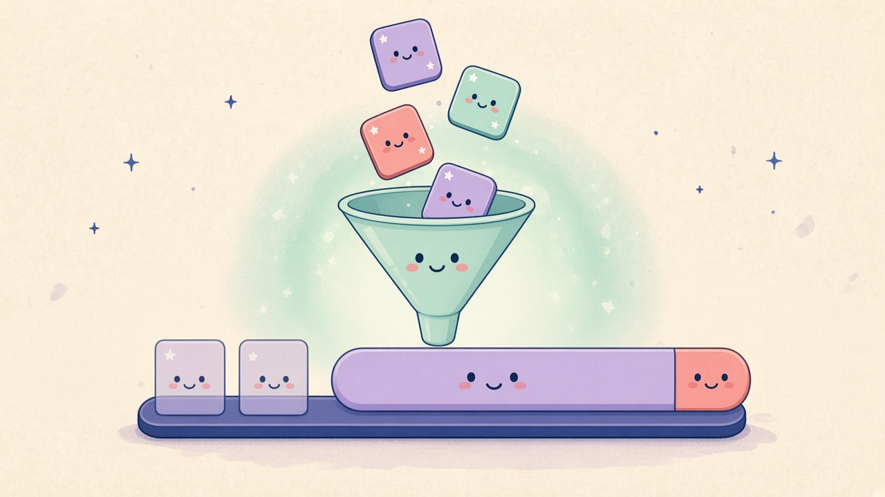

01 / Launcher-Filter und Suche

Deutsch
Launcher räumt die Suche
Nur Favoriten. Eine Leiste.
Filter, Favoriten und Ort sitzen im Overflow. Robi kommt erst mit einer Query. Scroll bleibt, aktive Filter sind sichtbar und lassen sich zurücksetzen.
English
Cleaner launcher search
Favorites only. One menu.
Type, favorites, and location live in one overflow. Robi appears only with a query. Scroll is restored; active filters show and reset.